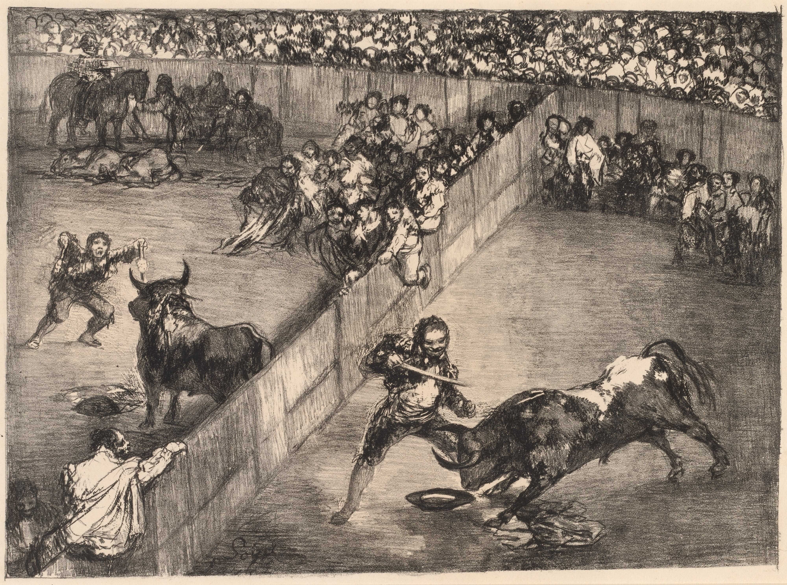
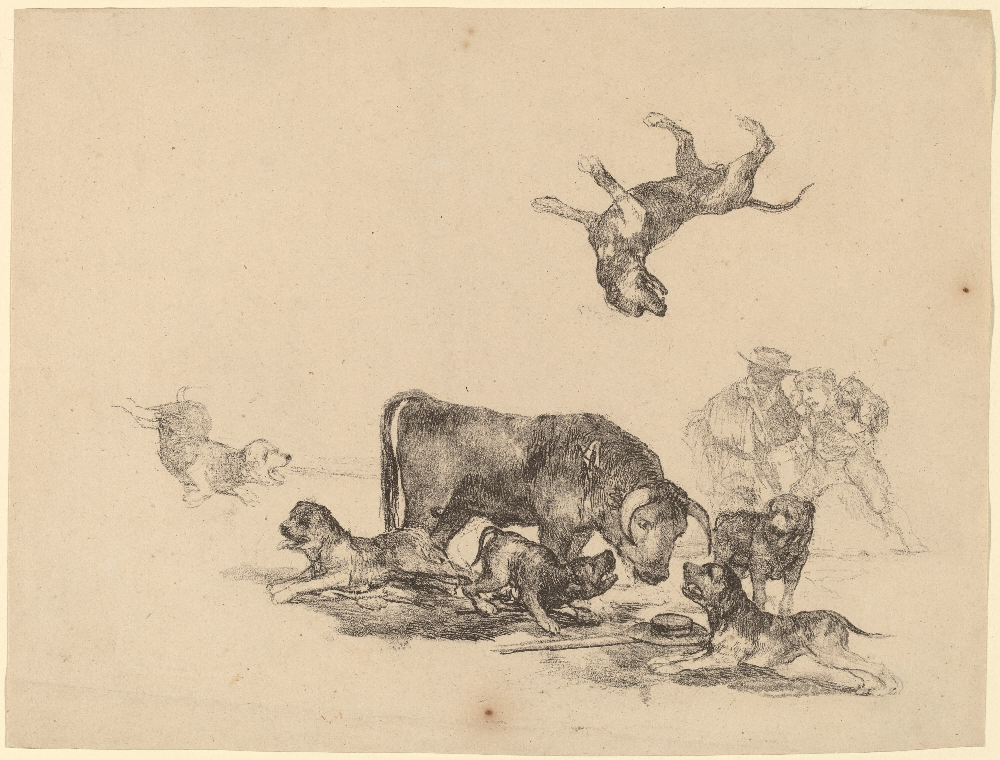
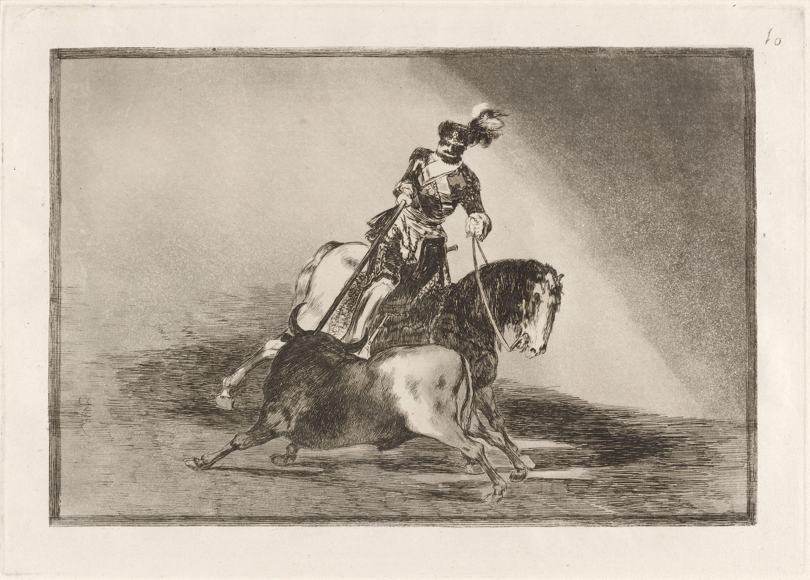
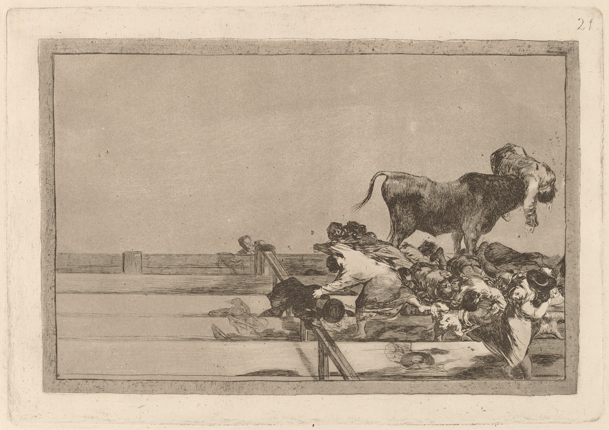

Francisco José de Goya y Lucientes (1746–1828) is regarded as the most important Spanish artist of the late eighteenth and early nineteenth centuries. Over the course of his long career, Goya moved from jolly and lighthearted to deeply pessimistic and searching in his paintings, drawings, etchings, and frescoes. Born in Fuendetodos, he later moved with his parents to Zaragoza and, at age fourteen, began studying with the painter José Luzán Martínez (1710–1785). In 1746, the year of Goya’s birth, the Spanish crown was under the rule of Ferdinand VI. Subsequently, the Bourbon king Charles III (r. 1759–88) ruled the country as an enlightened monarch sympathetic to change, employing ministers who supported radical economic, industrial, and agricultural reform. Goya came to artistic maturity during this age of enlightenment. In Madrid, the painter brothers Francisco (1734–1795) and Ramón Bayeu y Subías (1744–1793) had set up shop in 1763, and Goya soon joined their studio, eventually marrying their sister Josefa. He visited Italy in 1770, after two failed attempts in drawing competitions at the Real Academia des Bellas Artes in San Fernando.




Goya’s introduction to the royal workshops, a relationship that lasted the rest of his life and spanned four ruling monarchies, began in 1774. The German painter Anton Raphael Mengs asked Goya to work on tapestry cartoons, or preliminary paintings, for the Royal Tapestry Factory at Santa Bárbara. Goya painted sixty-three cartoons for two royal palaces, which included nine hunting scenes for the dining room at San Lorenzo del Escorial and ten cartoons for tapestries destined for the dining room at El Pardo. The tapestries glorify leisure activities of the rich, poor, young, and old in a playful Rococo manner comparable to the style of Tiepolo. The Blind Guitarist (22.63.29) was originally designed for the antechamber at El Pardo and comes from this genre. The tapestry weavers, frustrated by its complex composition, returned the cartoon to Goya. However, before simplifying it, Goya preserved the original design in a copperplate etching, the largest print he ever made. In 1778, Goya produced a group of etchings based on paintings by Velázquez. Goya made these etchings upon Mengs’ suggestion that he study Velázquez portraits in the royal collection.